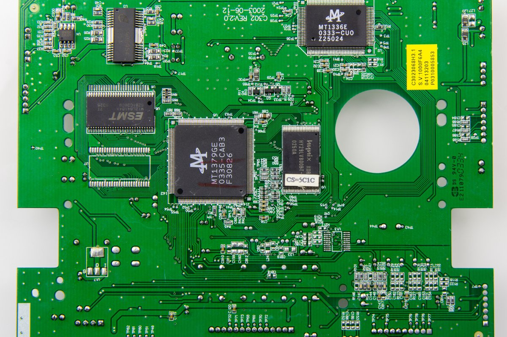

Пайка и электроника
Пайка соединяет небольшие компоненты в работающую схему. Это занятие про аккуратность и внимание к деталям.
- Компоненты и их роль в схеме.
- Соединения на электронной плате.
- Работа руками и терпение.
Данила / Моя мастерская
Мой уголок технических увлечений: пайка, компьютеры и маленькие детали, из которых складывается что-то большое.

Внутри привычных вещей
Я люблю паять и заниматься компьютерами. Поэтому вместо дневника путешествий у меня здесь мастерская — страница о занятиях, которые связаны с техникой.
Один интерес начинается с маленького соединения на плате. Другой — с целого компьютера, в котором всё должно работать вместе.
Два направления
Пайка соединяет небольшие компоненты в работающую схему. Это занятие про аккуратность и внимание к деталям.
Люблю заниматься компьютерами. Здесь интересно смотреть и на отдельные детали, и на систему целиком.
Немного о подходе
Эта страница — знакомство с моими увлечениями, а не инструкция по ремонту. Конкретные проекты и впечатления можно будет собирать в отдельных записях блога.
Вернуться к записям ↗Другой ритм